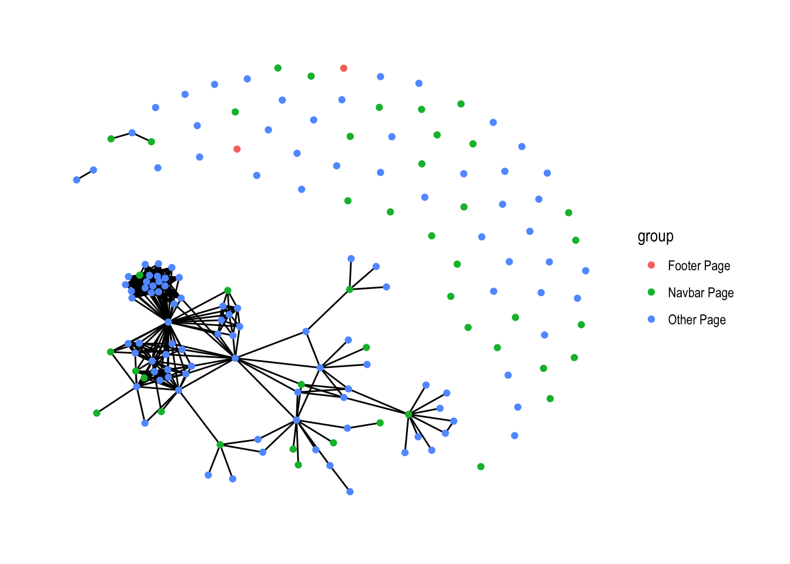
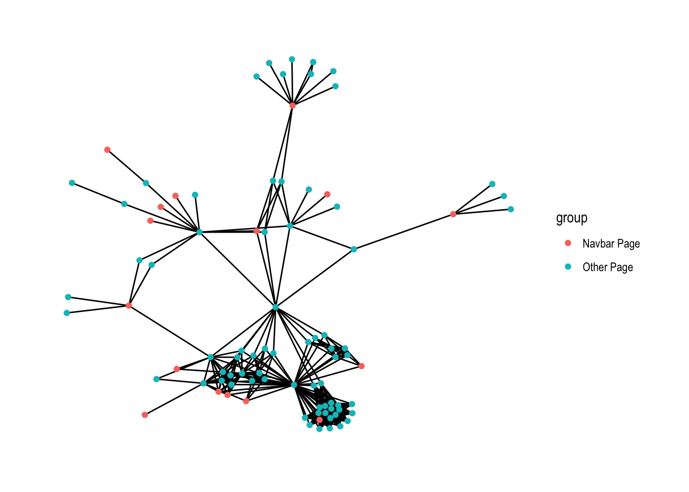

By Martin John Hadley | February 26, 2018
Citable Author
Martin John Hadley
( orcid.org/0000-0002-3039-6849)
orcid.org/0000-0002-3039-6849)
Citable Data
R packages: WDI
 .Rmd on GitHub
.Rmd on GitHubThe Rcrawler documentation includes an example 1 of how to build a network of the internal links in a website, using the code below. This takes up to 2 minutes, so I’ve made the data available in a Gist here.
library("Rcrawler")
Rcrawler(
Website = "http://researchdata.ox.ac.uk",
no_cores = 4,
no_conn = 4 ,
NetworkData = TRUE,
statslinks = TRUE
)The Rcrawler function creates two objects in your global workspace:
NetwIndex: A list of all the web pages (URLs) from the websiteNetwEdges: The internal links between these pages
It’s much easier to work with these objects if we augment the NetwIndex object with the ids used in the NetwEdges object, and I’ll export the data into a Gist for reproducability and so I don’t have to recrawl the site each time I generate this post!
library("tidyverse")
library("gistr")
rdo_oxford_index <- tibble(
id = 1:length(NetwIndex),
url = NetwIndex
) %>%
mutate(name = url)
rdo_oxford_index %>%
write_csv("rdo_oxford_index.csv")
NetwEdges %>%
write_csv("rdo_oxford_edges.csv")
rdo_oxford_gist <- gist_create(
files = c(
"rdo_oxford_edges.csv",
"rdo_oxford_index.csv"
),
description = "Blogpost: crawling with tidygraph"
)Now we can import the data directly from the gist as follows:
library("tidyverse")
rdo_oxford_edges <- read_csv("https://gist.githubusercontent.com/martinjhnhadley/ba5a983e4e29cae29d379fc9daf1d873/raw/dea7df7ae9a1542372fe6203362991ec019bb1c3/rdo_oxford_edges.csv")
rdo_oxford_index <- read_csv("https://gist.githubusercontent.com/martinjhnhadley/ba5a983e4e29cae29d379fc9daf1d873/raw/c3ead87cd4dc95696432b4f6547e4d7762132721/rdo_oxford_index.csv")Let’s generate an igraph object for manipulation with the tidygraph library, after first removing self-loops via the simplify function but retain multiple edges between pairs of webpages. The graph is too large to visualise sensibly at present:
library("igraph")
rdo_oxford_igraph <- graph_from_data_frame(
rdo_oxford_edges,
vertices = rdo_oxford_index
) %>%
simplify(remove.multiple = FALSE)
tibble(
edges = ecount(rdo_oxford_igraph),
vertices = vcount(rdo_oxford_igraph)
)## # A tibble: 1 x 2
## edges vertices
## <dbl> <int>
## 1 20330 383It would be useful if we could augment the rdo_oxford_index object with some features that allow us to selectively visualise certain types of pages, which include:
- pages that are generated due to pagination rules
- auto-generated pages for tags
- auto-generated pages for “portfolio items”
rdo_oxford_index <- rdo_oxford_index %>%
mutate(paginated.page = if_else(str_detect(url, "/page/"),
TRUE,
FALSE)) %>%
mutate(tag.page = if_else(str_detect(url, "/tag/"),
TRUE,
FALSE)) %>%
mutate(portfolio.page = if_else(str_detect(url, "/portfolio/"),
TRUE,
FALSE))Let’s also markup the pages linked to from the websites navigation menu and footer, as these are linked to on every single page!
library("rvest")
navbar_links <-
read_html(
"https://gist.githubusercontent.com/martinjhnhadley/ba5a983e4e29cae29d379fc9daf1d873/raw/4294b8180866b70f081c05a1dca9cb3bfd172fe3/navigation.html"
) %>%
html_nodes("a") %>%
html_attr('href') %>%
unique()
footer_links <- c("http://researchdata.ox.ac.uk/credits/",
"http://researchdata.ox.ac.uk/rdm-delivery-group/",
"https://www1.admin.ox.ac.uk/researchsupport/researchcommittees/scworkgroups/rdmopendata/")
rdo_oxford_index <- rdo_oxford_index %>%
mutate(navbar.page = if_else(url %in% navbar_links,
TRUE,
FALSE)) %>%
mutate(footer.page = if_else(url %in% footer_links,
TRUE,
FALSE)) %>%
mutate(node.id = row_number())Now’s time for me to learn how to use tidygraph! To filter out the paginated.pages, portfolio.pages and tag.pages and all links to the navbar.pages and footer.pages I need to follow these steps:
- Convert an
igraphobject to a"tbl_graph" "igraph"object - Activate nodes before filtering on them
- Activate edges before filtering on them
library("tidygraph")
rdo_oxford_igraph <- graph_from_data_frame(
rdo_oxford_edges,
vertices = rdo_oxford_index
) %>%
simplify(remove.multiple = FALSE)
navbar_page_new_ids <- rdo_oxford_index %>%
filter(navbar.page == TRUE) %>%
select(node.id) %>%
.[[1]]
footer_page_new_ids <- rdo_oxford_index %>%
filter(footer.page == TRUE) %>%
select(node.id) %>%
.[[1]]
rdo_oxford_tidygraph <- rdo_oxford_igraph %>%
as_tbl_graph() %>%
activate(nodes) %>%
filter(paginated.page == FALSE & portfolio.page == FALSE & tag.page == FALSE) %>%
activate(edges) %>%
filter(!to %in% navbar_page_new_ids) %>%
filter(!to %in% footer_page_new_ids) Finally, let’s add a group column so we can easily colour the different types of pages with the ggraph library:
library("ggraph")
rdo_oxford_tidygraph <- rdo_oxford_tidygraph %>%
activate(nodes) %>%
mutate(group = if_else(navbar.page == TRUE,
"Navbar Page",
"Other Page")) %>%
mutate(group = if_else(footer.page == TRUE,
"Footer Page",
group))
rdo_oxford_tidygraph %>%
ggraph() +
geom_edge_fan() +
geom_node_point(aes(color = group)) +
theme_graph()
Actually, there are two more things I’d like to do: extract the largest connected component and make an interactive network viz. It was slightly frustrating to figure out from the documentation how to use the group_components function, but it became clear that it works similarly to group_indices:
rdo_oxford_tidygraph %>%
activate(nodes) %>%
mutate(component = group_components()) %>%
filter(component == 1) %>%
ggraph() +
geom_edge_fan() +
geom_node_point(aes(color = group)) +
theme_graph()
It’s really easy to create interactive dataviz using htmlwidgets (what are htmlwidgets?), my favourite option for network visualisations is visNetwork, which happily consumes igraph objects…
# library("visNetwork")
# rdo_oxford_tidygraph %>%
# activate(nodes) %>%
# mutate(component = group_components()) %>%
# filter(component == 1) %>%
# mutate(title = url) %>%
# mutate(label = "") %>% # remove long url labels from underneath nodes
# as.igraph() %>%
# visIgraph(idToLabel = FALSE) %>% # remove long url labels from underneath nodes
# visOptions(highlightNearest = TRUE) %>%
# visLegend()This was a really fun way to learn how to use tidygraph and ggraph, which I’ve been putting off for a long time. I’m really grateful to Thomas Lin Pedersen for all his work on these amazing packages!
Citable Author
Martin John Hadley
(orcid.org/0000-0002-3039-6849)
Citable Data
R packages: WDI
Actually, there was an error in the example so I made a pull request to fix it 😄↩